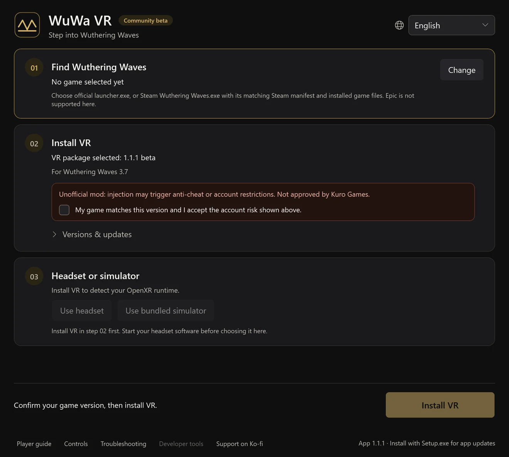
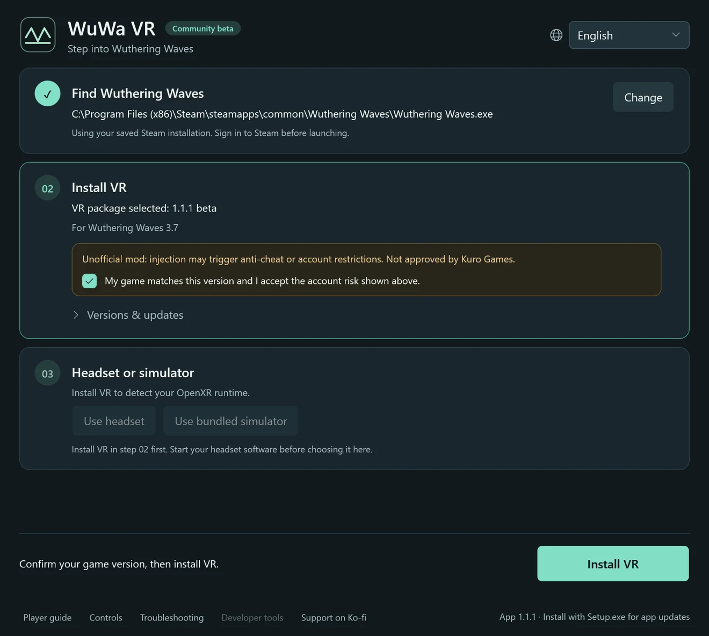
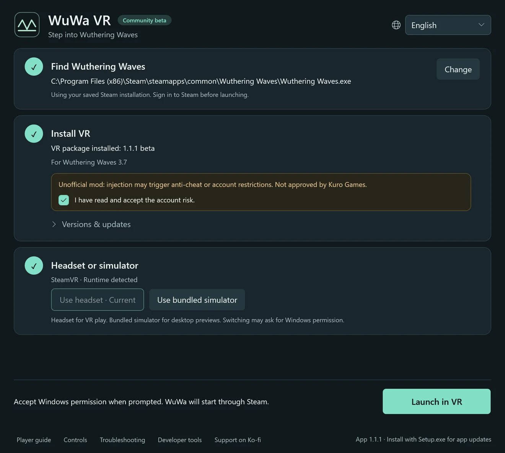

Community beta1.1.1 · Wuthering Waves 3.7
Step into Wuthering Waves
A free, fan-made VR mod for Windows. Walk Solaris-3 at full scale with head tracking, a first-person body and controller shortcuts. Built on praydog's UEVR.
Install, then three steps
Run WuWa-VR-Setup.exe and open WuWa VR. The launcher walks you through the rest; the first install downloads the VR mod, and no Python or other tools are needed.
Find Wuthering Waves
Pick your Steam or official Kuro launcher copy of the game. Your choice is saved. Epic is not supported yet.
Install VR
Read the account-risk notice, confirm your game version and install. Updates keep your settings and backups.
Headset or simulator
Start your headset software, or choose the bundled simulator. Then select Launch in VR and accept the Windows permission prompt.






Actual launcher screens, rendered from the app in English. Your paths and runtime will differ.
In game, L3 + R3 opens UEVR settings. WuWa options are under VR → WuWa Controls. Full setup, update and recovery guide
Made for playing, not just looking
Stereo VR, head tracking
Real depth in OpenXR headsets. Menus and HUD stay usable, and you can move, resize or hide the UI.
Controller first
Xbox and experimental PlayStation shortcuts, with an in-VR shortcut sheet on L3 + Menu.
First-person body
See your character's hands and outfit with the head hidden. Optional full-animation follow, with a comfort mode.
Free cameras
Freecam, drone, plane and acro viewpoints for exploring and screenshots. Experimental.
6DOF window
An optional window mode that places the game in your room. Adapted from Elliott Tate's work.
Both eyes match
Far trees, props and indirect lighting match in each eye, so the world reads as one scene.
First person, down to the idle animation
Look down and your character is there: hands, outfit and idle animations, at full scale. Hide the head bones and keep the body, or follow the full animation if you like a livelier view.
Record your own high-resolution clipsStep-by-step: first person, a clean frame and the built-in recorder.Everyday Xbox controls
L3 / R3 mean pressing the sticks. View is the two-squares button; Menu is the three-lines button. LB + Y stays the game's normal action.
| L3 + R3 | Open / close UEVR settings |
|---|---|
| L3 + B | Show / hide game UI, including menus |
| L3 + A | Recenter view / portal |
| L3 + Menu | Show / hide the shortcut sheet |
| L3 + LB | Toggle HUD / mouse adjustment, then release (newer candidate builds) |
| L3 + View | First person on / off |
| Double R3 | Freecam on / off |
| L3 + RB | Game / fixed camera |
Questions
Which headsets work?
WuWa VR uses OpenXR. It has been played on a Quest Pro through SteamVR; other OpenXR headsets should work but are not verified yet. The bundled simulator lets you try it on a flat screen.
Steam, Kuro launcher or Epic?
Steam and the official Kuro launcher are supported. Epic is not supported yet.
Can my account be restricted?
Yes, it is possible. The mod injects into the game and anti-cheat may detect it. Kuro Games has not approved it. Read the risk notice before you install.
Windows warns about the installer. Is that expected?
The installer is not code-signed, so SmartScreen may warn. Download only from the project's GitHub release and compare the SHA-256 checksum. Never disable antivirus or anti-cheat.
How do updates work?
The app checks for its own updates and asks before restarting. VR packages update separately in step 02, and you can roll back to a previous installed version.
Does it change my game files?
No. The launcher leaves game files alone; the VR mod is injected when you launch.
How do I uninstall?
Use Troubleshooting → Prepare uninstall in the app, then remove WuWa VR in Windows Settings → Apps. Settings, backups and recordings are kept unless you delete them.
Is it free?
Yes. It is a free fan project and the launcher is MIT open source. Support on Ko-fi is optional and buys no guarantees.
Known limitations
- Steam startup still fails on some PCs; a fix is in testing. The official Kuro launcher route is the most tested.
- Some scene and dialogue loads can stall, and flat menus may show a moving background.
- HUD-aspect refresh is unreliable; some NPC lighting, reflections and fog still need testing.
- Automatic cinematic switching is experimental and off by default; a prerendered movie has not been tested.
Open source, checkable downloads
The desktop launcher is MIT open source and our mod changes are public. Every release ships matching source and SHA-256 checksums.
VirusTotal reports have not yet been verified for this release. No clean-scan or safety certification is claimed.
Help improve the project
Write in whichever language you prefer. Prepare a report, review it on GitHub, then submit it yourself. This site never posts automatically. GitHub sign-in is needed to submit there; copying a draft needs no account.
The public GitHub destination is not connected yet. You can copy your draft; it has not been sent.
Your draft — review before sharing
Built on community work
WuWa VR stands on work by praydog and the UEVR contributors, mirudo2, polar, SannpoKun, Indath, endlessfalls and Elliott Tate.